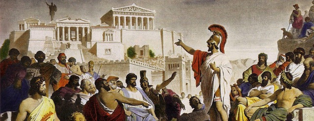

<!DOCTYPE html>
<html xmlns="http://www.w3.org/1999/xhtml" lang="" xml:lang="">
<head>
  <meta charset="utf-8" />
  <meta name="generator" content="pandoc" />
  <meta name="viewport" content="width=device-width, initial-scale=1.0, user-scalable=yes" />
  <meta name="author" content="David Ehrens" />
  <title>Democracy did not die today</title>
  <style>
    html { line-height: 1.5; font-family: Georgia, serif; font-size: 18px; color: #1a1a1a; background-color: #fdfdfd; } body { margin: 0 auto; max-width: 40em; padding-left: 30px; padding-right: 30px; padding-top: 8px; padding-bottom: 30px; hyphens: auto; word-wrap: break-word; text-rendering: optimizeLegibility; font-kerning: normal; } @media (max-width: 600px) { body { font-size: 0.9em; padding: 1em; } } @media print { body { background-color: transparent; color: black; font-size: 12pt; } p, h2, h3 { orphans: 3; widows: 3; } h2, h3, h4 { page-break-after: avoid; } } p { margin: 1em 0; } a { color: Crimson; /* #ee0000; */ text-decoration:none; } a:hover { color: Orange; } img { max-width: 100%; display:block; margin-left:auto; margin-right:auto; } h1, h2, h3, h4, h5, h6 { margin-top: 1.4em; } h5, h6 { font-size: 1em; font-style: italic; } h6 { font-weight: normal; } ol, ul { padding-left: 1.7em; margin-top: 1em; } li > ol, li > ul { margin-top: 0; } blockquote { margin: 1em 0 1em 1.7em; padding-left: 1em; border-left: 2px solid #e6e6e6; color: #606060; } code { font-family: Menlo, Monaco, 'Lucida Console', Consolas, monospace; font-size: 85%; margin: 0; } pre { margin: 1em 0; overflow: auto; } pre code { padding: 0; overflow: visible; } .sourceCode { background-color: transparent; overflow: visible; } hr { background-color: #1a1a1a; border: none; height: 1px; margin: 1em 0; } table { margin: 1em 0; border-collapse: collapse; width: 100%; overflow-x: auto; display: block; font-variant-numeric: lining-nums tabular-nums; } table caption { margin-bottom: 0.75em; } tbody { margin-top: 0.5em; border-top: 1px solid #1a1a1a; border-bottom: 1px solid #1a1a1a; } th { border-top: 1px solid #1a1a1a; padding: 0.25em 0.5em 0.25em 0.5em; } td { padding: 0.125em 0.5em 0.25em 0.5em; } header { margin-bottom: 2em; text-align: center; font-family: Arial, Helvetica, san-serif; } h1.title { color: #777777; margin: 2px; } p.author, p.date { margin: 2px; font-style: italic; font-size: smaller; } #TOC li { list-style: none; } #TOC a:not(:hover) { text-decoration: none; } code{ white-space: pre-wrap; } span.smallcaps{ font-variant: small-caps; } span.underline{ text-decoration: underline; } div.column{ display: inline-block; vertical-align: top; width: 50%; } div.hanging-indent{ margin-left: 1.5em; text-indent: -1.5em; } ul.task-list{ list-style: none; } .display.math{ display: block; text-align: center; margin: 0.5rem auto; }
  </style>
</head>
<body>
<header id="title-block-header">
<h1 class="title">Democracy did not die today</h1>
<p class="author">David Ehrens</p>
<p class="date">2020-02-04 08:00</p>
</header>

<p></p>
<p>Democracy did not die today with the Senate rubber-stamping the President’s “innocent.”</p>
<p>For a democracy to die, it must have first lived. There are many precedents for Trump’s sham impeachment trial which point an accusing finger at a nation that has never believed in the florid promises of democracy found in its own Declaration and Constitution.</p>
<p>Slavery, genocide, and subversion of democratic elections in other countries have been a steady feature of American “democracy.” Creating a society of equals with equal opportunity and equal representation has never been its object, as Jim Crow, voter suppression, mass-incarceration, censorship, and ever-new variations of McCarthyism show.</p>
<p>As central to our sick society as these are, I don’t want to talk about history, colonialism, capitalism, or white supremacy today. We know these are the root causes of so many of our ills. I would rather talk about the blatant impunity and injustice which occur daily in our courts and which have culminated with the rigged Senate trial of Donald John Trump on February 5th, 2020. And though there are four centuries of our history to consider, let me simply point to events that have occured in my own lifetime.</p>
<p>In 1955, Emmett Till was visiting relatives in Money, Mississippi, when he was lynched and his body discovered three days later in the Tallahatchie River. The identities of his killers and the ringleaders of his lynching were never in doubt. Roy Bryant and J.W. Millam were arrested. But an all-white jury found them not guilty.</p>
<p>In 1963 Medgar Evers was murdered in his driveway by Byron De La Beckwith, a member of the White Citizens Council in Jackson, Mississippi. In 1964 an all-white jury somehow could not reach a verdict. It took thirty years of fighting by Evers’ family, and finally his exhumation for additional evidence, to reopen the case against De La Beckwith.</p>
<p>In 1964 Ku Klux Klan “Kleagle” Edgar Ray Killen participated in the murders of civil rights workers James Chaney, Andrew Goodman, and Michael Schwerner. When Killen was finally arrested, an all-white jury refused to convict a “preacher.” Twenty years later Killen was again charged with murder, but a mostly-white jury again refused to hold him directly accountable for the murders, instead convicting him on lesser conspiracy charges.</p>
<p>The War in Vietnam slaughtered up to two million Vietnamese and left behind birth defects from Agent Orange and ruined bodies from land mines long after the U.S. beat a hasty exit from Saigon. But it was the My Lai massacre in 1968 that indicted the American justice system that failed to prosecute it and the government officials who covered it up. Hundreds of civilians — the US said 347, the Vietnamese government counted 504 — were raped, bayoneted, and shot execution-style, including children, and left in ditches full of blood. Only one platoon member was ever convicted. William Calley was sentenced to just three years of prison, but Richard Nixon ordered this commuted to house arrest. The matter was quietly closed. We have a long history of impunity for war crimes going back to the nation’s founding.</p>
<p>Tens of thousands of black people were lynched from Reconstruction through Jim Crow, and one would have thought this gruesome chapter of our history was over. But it doesn’t take much to revert to barbarism in this country. A case in point was the lynchings of African Americans immediately following Hurricane Katrina in 2005. In 2019 <em>The Nation</em> and <em>ProPublica</em> reported on a significant number of unsolved homicides of black people in Algiers Point and elsewhere, and of the emergence of white supremacist militias that had organized the killings. After the articles were published, New Orleans Police Superintendent Warren Riley said he’d “look into” it.</p>
<p>Most of us will not forget the name Trayvon Martin, an unarmed black teenager who in 2012 was shot after punching George Zimmerman, who had been harrassing and following him. Zimmerman’s lawyers had planned to defend their client on the basis of so-called “stand your ground” laws, and the case was under intense public scrutiny. Alan Dershowitz — <em>that</em> Dershowitz — attacked Florida’s State Attorney Angela Corey for even daring to prosecute Zimmerman. In the end a Florida jury let Zimmerman walk.</p>
<p>In 2013, when rich white boy Ethan Couch crammed seven of his friends into his hot red pickup truck and then totaled it, killing four of them, Couch’s defense lawyer claimed he was a victim of “affluenza” — a word the lawyer said described the coddled teen’s irresponsibility resulting from his family wealth. Even though Couch had a blood alcohol level three times the legal limit and had killed four people, the defense strategy worked. Couch was released on probation — until he fled to Mexico with his mommy.</p>
<p>And who can forget former Ferguson police officer Darren Wilson, who murdered Michael Brown in 2014 and was never prosecuted? This was a case that launched the Black Lives Movement — a fight against precisely the sort of impunity I’ve been enumerating.</p>
<p>Or Stanford swimmer Brock Allen Turner, who in 2015 was discovered by two graduate students in the process of raping a woman behind a fraternity house dumpster. Turner’s lawyer wrote that “he is fundamentally a good young man” and Turner’s father argued it was unfair that he should go to prison for “20 minutes of action” by his rapist child. The Golden Boy was given six months in jail by Judge Aaron Persky.</p>
<p>Or the refusal to prosecute Baltimore police officers for the 2015 death of Freddie Gray, who died an excruciating death in the back of a police van. Not even Obama’s Justice Department found sufficient grounds to charge any of the officers with civil rights violations. In fact, a 2016 national study which examined civil rights violations of 21,000 policemen found that only 3% were ever convicted of crimes against the public.</p>
<p>In 2018 Georgia white supremacist William Christopher Gibbs showed up at an emergency room afraid he had exposed himself to ricin, and he and his car tested positive for the deadly agent. But prosecutors refused to charge Gibbs with domestic terrorism, cititing “technical” reasons they couldn’t charge a white terrorist. To this day, the U.S. government is largely unwilling to admit any danger to society of white supremacists.</p>
<p>Each year roughly one thousand people are shot by police, most of them people of color and many of them unarmed. But 98% of the officers are never charged for murder and police frequently claim “reasonable” fear for their safety as a justification for killing an unarmed civilian. I find it ironic that police can claim “I feared for my life” — and White America believes them — while any refugee seeking asylum because “I feared for my life” is regarded as a liar.</p>
<p>When Brett Kavanaugh appeared before a Senate confirmation committee in 2018, witnesses cited his sexual predation as a teenager as a reason he was unfit for the Supreme Court. Yet the Senate — as it was when Anita Hill had made similar charges about Clarence Thomas — was not disturbed by any of the allegations. Michelle Goldberg wrote in the New York Times, “Boys will be Supreme Court Justices,” and she was right. Rebecca Solnit wrote that the old white men of America simply don’t want to know, and she was also right.</p>
<p>American Justice may be blind — but it is wilfully so. Our entire legal system, from top to bottom, is nothing more than concierge service for rich and powerful, mainly white, men.</p>
<p>And how is a system of impunity possible without pardons?</p>
<p>In 2019 Donald Trump pardoned SEAL commander “Eddie” Gallagher and promoted him. Members of Gallagher’s platoon, SEAL Team 7, claimed he had killed innocent civilians and murdered an unconscious prisoner, then posed for pictures with the corpse. One platoon member who testified said of Gallagher, “The guy is freaking evil.” According to testimony, when the SEALs captured an injured ISIS fighter Gallagher began stabbing him in the neck. Another platoon member turned off his helmet cam right before the fighter died. Besides Gallagher, Trump also pardoned convicted civil rights abuser Sheriff Joe Arpaio and Dinesh D’Souza, who was convicted of federal campaign violations.</p>
<p>We say we are a “nation of laws” — for <em>some</em> — but in an oligarchy, a kleptocracy, or a kakistocracy the usual rules of law don’t apply to men with high-level connections. Whatever we call this system, let’s not call it a “democracy.”</p>
<p>The 2008 financial crisis was another example of the American justice system revealing itself as an agent of impunity for financial criminality. In 2014 — six years after the financial crash — <em>ProPublica</em> and the <em>New York Times</em> reported that the only Wall Street executive to ever be prosecuted as a result of the crisis was Kareem Serageldin. Meanwhile, there are people still serving life sentences for marijuania possession in prisons all over the United States. To add insult to injury, rather than hold Wall Street accountable for its losses, a bipartisan group of rich and powerful men decided to make citizens cough up the almost two trillion dollars necessary to bail them out.</p>
<p>Last week a friend sent me a piece by Andy Borowitz from the New Yorker — “El Chapo outraged that his trial included witnesses.” It was funny at the time. Or would have been if it hadn’t so painfully highlighted the hollowness of the culture of impunity we mistakenly call “democracy.”</p>
<p>So let us not weep. Democracy did not die today. We never had it in the first place.</p>
</body>
</html>
